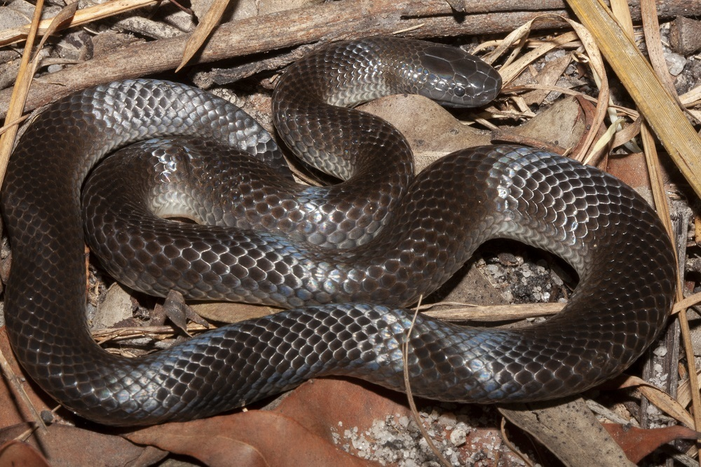

Venom HazardHow dangerous is the venom itself?Not scored
Missing: needs yield.
Potency22.7
LD50 of 2.7 mg/kg (SC injection).
Quantity–
No venom yield figure yet, so no Venom Hazard.
Small-eyed snake has no scores yet because key data is missing.

Missing: needs yield.
LD50 of 2.7 mg/kg (SC injection).
No venom yield figure yet, so no Venom Hazard.
Fewer than three of the four factors are known.
Not rated yet. Secretive and nocturnal snake of eastern Australia; found under logs and rocks, occasionally met in gardens.
Not scored: temperament not documented.
Not recorded yet.
Not recorded yet.
Missing: needs both.
An equal average of Venom Hazard and Human Risk. Always read it with the two scores beside it.
Scores are relative to the species on this site. Bars run from 0 to 100. How these scores are built.
No clinical summary recorded yet.
| Measure | Value | Source | Grade |
|---|---|---|---|
| LD50 (mice) | 2.7 mg/kg · SC | Broad, Sutherland & Coulter (1979) Toxicon 17:661-664. Mice, SC. | A |
| Deaths a year | – | No sourced figure yet. |
No Venom Hazard yet, so no data grade.